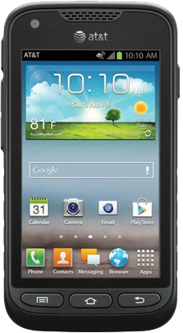

삼성 갤럭시 럭비 프로
1. 외관

삼성전자가 2012년 10월에 출시한 안드로이드 스마트폰.
2. 사양
| 프로세서 | 퀄컴 스냅드래곤 S4 Plus MSM8960 SoC. Qualcomm Krait MP2 1.5 GHz CPU, 퀄컴 Adreno 225 GPU | ||
| 메모리 | 1 GB LPDDR2 SDRAM, 8 GB 내장 메모리, micro SDHC (최대 32 GB 지원) | ||
| 디스플레이 |
4.0인치 WVGA(480 x 800) RG-BG 펜타일 서브픽셀 방식의 삼성 Super AMOLED (233 ppi) 멀티터치 지원 정전식 터치 스크린 |
||
| 네트워크 | 기본 | LTE Cat.3, HSPA+ 21Mbps, HSDPA & HSUPA & UMTS, GSM & EDGE | Wi-Fi 802.11a/b/g/n, 블루투스 4.0+A2DP |
| - | - | ||
| 카메라 | 전면 130만 화소, 후면 500만 화소 AF 및 LED 플래시 | ||
| 배터리 | Li-lon 1850 mAh | ||
| 운영체제 | 안드로이드 4.0 (Icecream Sandwich) → 4.1 (Jelly Bean) | ||
| 규격 | 67 x 128 x 12.7 mm, 159 g | ||
3. 상세
대한민국의 갤럭시 R 스타일와 같이 갤럭시 S III의 하위호환 모델이다.
다만, 북미판 갤럭시 S III는 퀄컴 스냅드래곤 S4 Plus MSM8960을 사용하기 때문에 갤럭시 R 스타일과는 다르게 해상도와 AP 클럭을 낮추는 것으로 해결하였다.